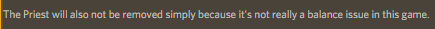

A second buff if the buff to charge doesn’t seem like enough.
Electric Discharge (Passive) - You are permanently charged, and any uncharged player who visits you also becomes charged.

A second buff if the buff to charge doesn’t seem like enough.
Electric Discharge (Passive) - You are permanently charged, and any uncharged player who visits you also becomes charged.
My biggest complaint with this is that it loses the electrocutioner feel. It feels more like a plague scientist or something

from FoL discord server.
thank you very very much
It’s not framing, and it lasts 2 nights. Now it’s just an indication that you’ve been rooted.
So, you still get your normal investigative result alongside the notification? And by lasting two nights, does that player become “unrooted” after the time is up or does it just not show the notification anymore?
It simply dosen’t show the notification, as they have settled into the room.
I like this one as electro has the option to just kill someone like normal which every NK needs.
I’d still way rather it go as it’s basically a worse less skillful druid and more luck based, but following vulgards suggestion would be the best imo. I don’t like the charge announcement thing as that is literally the same as druid.
Just get rid of it
Too many NKs
Only add an NK if it solves a problem. E.g Reaper being added is great as it will make BD more tentative to do a mass-claim as a Reaper can pierce protectives. Electro existing does not change the meta at all and is literally just there for a funny incredibly mediocre gimmick.
I feel like we’re at just the right number of NKs. If we take out Electro it’d open up space for a better designed NK though.
(I’m still mostly in favor of at least trying out Vulgard’s buff to Electro though)
Having both electro and druid is meh though. Each NK needs to feel completely unique and those 2 don’t really. They are both cool concepts but having a cool concept alone doesn’t warrant something being added, you need to see the game as a whole.
especially since electrocutioner games aren’t even hard
like I get we can buff it but it’s still weak-feeling
so you want us to discuss a new druid? again?
Number of NKs doesn’t really matter much.
While I’d love to see another NK fill it’s place, it shouldn’t be reason against removing it.
Yes it should.
It feels really wrong to have 20 NKs and like 3 of every other category
I keep saying the same thing
Number of NKs aside, Electrocutioner is too similar to Druid and really UP.
I think the first reason alone is enough to remove or entirely change it’s premise.
Making it strong enough to be playable won’t make it not too similar to Druid.